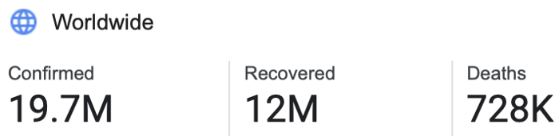
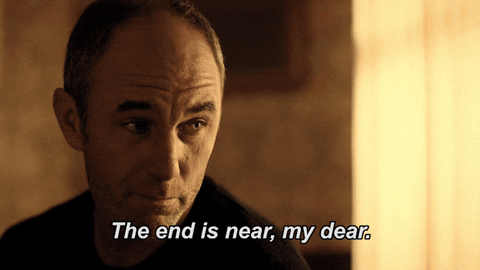
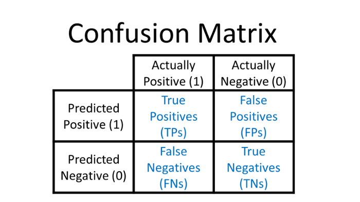
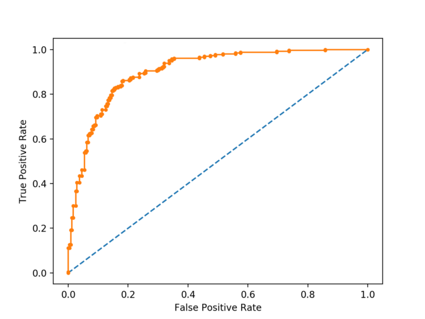
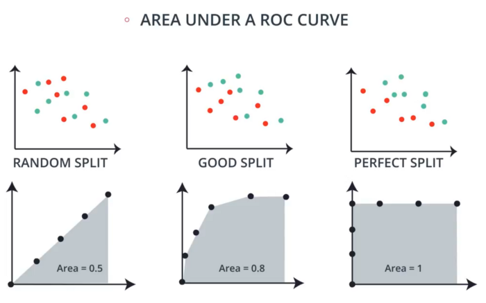

So you’ve finally finished training the last epoch of your AI. It’s always a great feeling after hours of cleaning data
and waiting for those epochs to finish up.
Now comes one of the most important parts of finishing up a new model … evaluating its performance.
Most tutorials online use % accuracy to measure a model’s performance. Yet despite its popularity, that’s not always the
best option.
The Downfalls of Accuracy
To show accuracy can be a misleading metric, I’m going to use a model that detects COVID-19 as an example.
Let’s take the world’s COVID data as an example

COVID Case count as of August 9th, 2020 as per Google
The current population of the Earth is 7.8 billion people.
Now imagine a model that diagnosed every single person as COVID free. It’s pretty obvious that this is the worst
possible model to deploy … right?
19,700,000 / 7,800,000,000 = 0.253% error
This model would have a 0.252% error. That means a 99.747% accuracy.
Take that in … a model can achieve 99.747% accuracy by saying nobody in the world has coronavirus!
Trusting models like this to diagnose diseases would mean the end of the world.

So it’s obvious that some models need a different way of measuring their performance.
The Confusion Matrix
One popular way to visualize the performance of a model is the confusion matrix.

These matrices show that not all model errors are the same. There’s actually two types of errors: False Positives (Type
1) and False Negatives (Type 2).
Depending on what your model is predicting, one can be more dangerous than the other.
Precision and Recall
These two metrics focus on tracking one type of error (Type 1 or 2).

Precision is used to avoid false positives. Spam detectors would optimize for high precision. Any false positives would
cause it to delete important emails. Precision models focus on reducing false positives, even if it increases false
negatives.
Recall is used when false negatives are dangerous. Medical diagnosis models should optimize for high recall. Otherwise,
they’d let sick patients go home. Recall models focus on reducing false negatives, even if it increases false
positives.
ROC Curves
An ROC curve measures how good a model is at differentiating between two classes.
They’re often better than only measuring how good the model is at finding True Positives. (this is what accuracy tracks)

When a model makes a prediction, it gives certainty between 0–1. The model then classifies it as a positive only if that
confidence is above a certain threshold.
An ROC curve is a graph of the True Positive VS False Positive rates of every possible threshold.
If you take the areas underneath an ROC curve, you number between 0–1. This value represents how well your model
performs.

Next time you’re evaluating your model, choose a metric based on what’s important for your model to achieve.